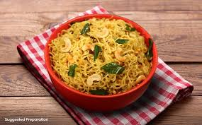

Maggi - Recipe

Maggi is a quick and flavorful instant noodle dish, beloved for its spicy masala seasoning and versatile add-ins.
Ingredients
- Maggi noodles packet
- Water
- vegetables (optional: peas, carrots, capsicum)
Steps
- Cook the noodles: Boil water, add Maggi noodles, and the tastemaker masala packet.
- Enhance with vegetables: Sauté diced vegetables in oil and add them to the noodles for extra flavor and nutrition.
- Simmer and serve: Stir everything together, let it cook for 2-3 minutes, and serve hot.
Home